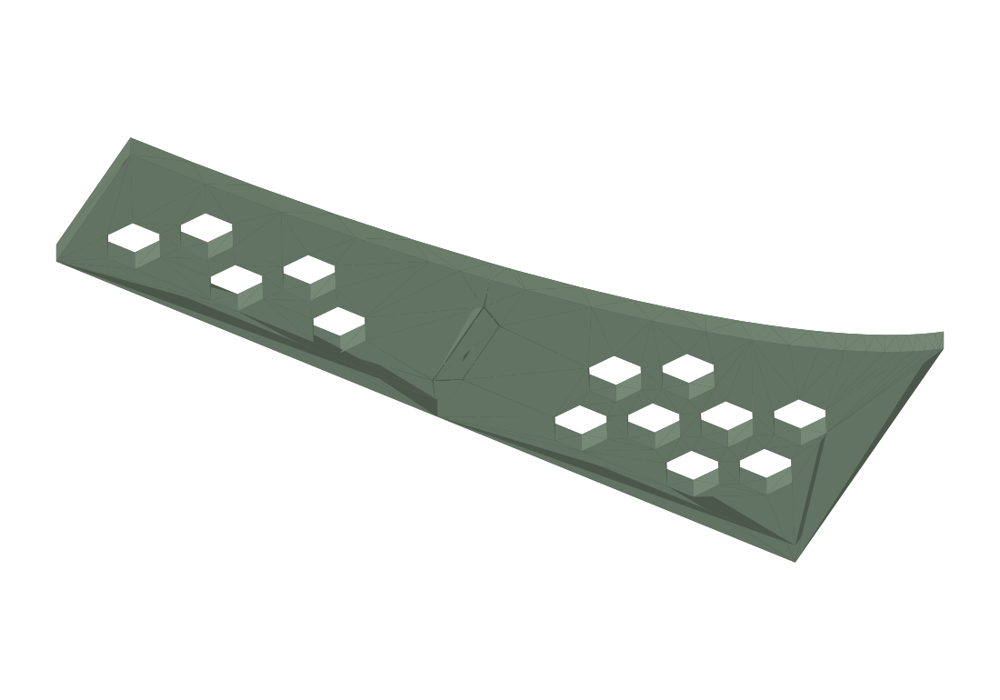
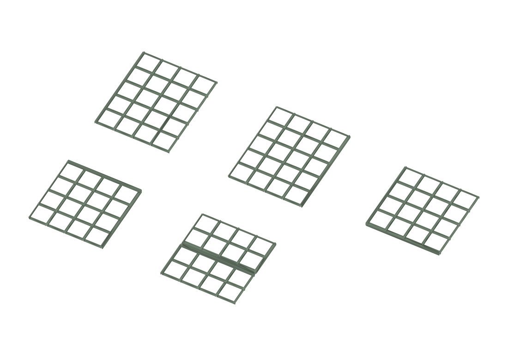
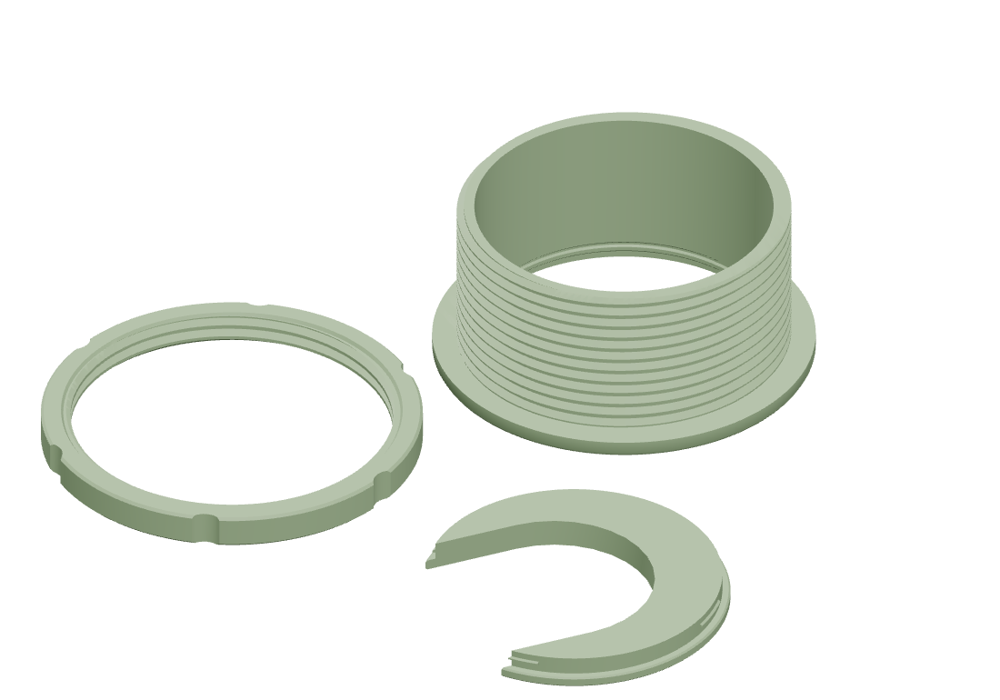

Projects

Cabinet door templates
Woodworking
Sanding plane
Woodworking
Eighth-circle stencil
Woodworking
Fingernail-profile caul
Woodworking
Closet space saver
Home & storage
Closet space saver · remix
Home & storage
Gridfinity rebuilt bin
Home & storage
Jae drawer
Home & storage
Tea drawer
Home & storage
Small filing cabinet
Home & storage
UHK foot
Everyday objects
Deckpass
Everyday objects
Ping-pong tail attachment
Everyday objects
Cardboard can
Everyday objectsNo projects match. Try another name or category.